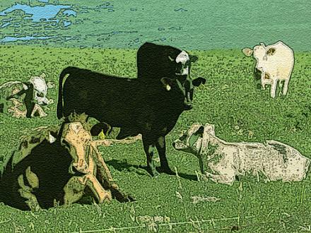

And so they stand,
heads up, spines bevelled.
They face their own
intimate ways,
as though each jaw
stripped and cudded
the green of a compass-point.
Clouds bag down low
about their shanks —
swatches of restless water
to shammy off
the ticks and shit
and meadow-smears
of another week
misted in dreams.
Suddenly
they wheel around,
as at a single click
up or down
in the humour of the air;
lock into the path
of a leader
who pioneers her way
to the edge of their world,
the cut of her legs
like a horse in show,
her tail a self-maddening crop.
Perhaps she has scented
a hogsback of grass
that hunkered itself
in the long caprices of summer.
Or autumn has her already
by the nose
and draws her on
to its wilds of perpetual half-light,
where shelter
is the pitch of undefending struts
in a matchstick universe,
where Novembers capitulate
in javelins of rain
on shaken eaves.

Never A Bone Between Them
Do they know their boy
is up at his window,
high where the air
misremembers the feathering of larks
and first stars
find each other shyly
with their horns of antique light?
Do they hear the town strike nine?
See the September day
fall itself apart,
hand over its narrows of blue,
the crackle of a leaf new-dead
in a flowing tree?
Their boy frets and squeezes
against the pane. Makes a passing feint
at the catch, as if giving
a lollopy wave
to his purseful of words and summers.
Do they know that,
held for now on the sill’s twigging,
the thin cuppage of glass,
adventure makes his eyes
wetly beautiful?
Tails of spent comets glide
from one to the other, the vapour-fleece
of unbuildable jets.
All the come-hither of space works upon him.
Words with never a bone between them
twangle his heart. Boing. Kerpow. Splat.
Below, a bus strikes a can.
It ballerinas sleepily to rest where it meant.
A wrapper fights lamp and rail
yet homes like kite-silk to its pavestone.
Do they know his hand and the catch
are of a length?
He is blessed, being rubber,
being boots that crunch flame and calamity
and keep their sheen.
He clamps a harness of speedlines
to his back. The wind writes whoosh
up the frames and bricking,
knuckles his mouth,
cries it again in his soul.
Michael W. Thomas lived for a number of years in Canada and is now based in Worcestershire. His poetry and prose have been published in Britain, Europe and North America, and he reviews for Other Poetry, Poetry Nottingham and Raw Edge. His latest poetry collection, Port Winston Mulberry, is forthcoming from Peterloo. Website: www.michaelwthomas.co.uk .